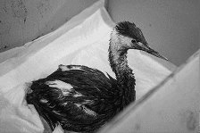

Море молчит, животные — нет
последствия для фауны
Разлив нефти на побережье Анапы стал катастрофой для местных животных. Уже в первые часы после утечки в соцсетях начали появляться фотографии — птицы, покрытые жирной плёнкой, медленно выбрасывающиеся на берег, дельфины, пытающиеся всплыть, но увязшие в нефти. Визуальные материалы документировали серьезные повреждения фауны, подтверждая высокую смертность среди животных.
наведи, чтобы перевернуть
Птицы
Птицы стали самыми первыми жертвами. Согласно оценке волонтёрских групп, принимавших участие в ликвидации последствий, в первые дни после разлива было собрано около 8000 пострадавших птиц. В реабилитационных центрах удалось стабилизировать состояние лишь 121 из них. Большинство погибли ещё до прибытия специалистов.
По словам орнитолога Светланы Смирновой, работающей в пункте спасения птиц в Витязево, причиной высокой смертности стало не только токсичное воздействие мазута, но и отсутствие в России системы экстренной ветеринарной помощи для диких животных.
